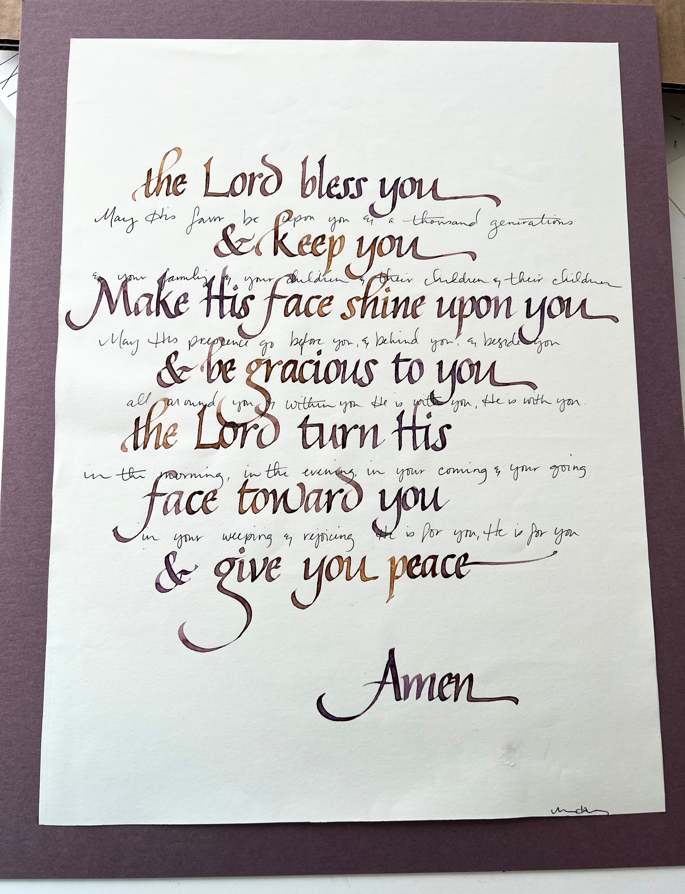
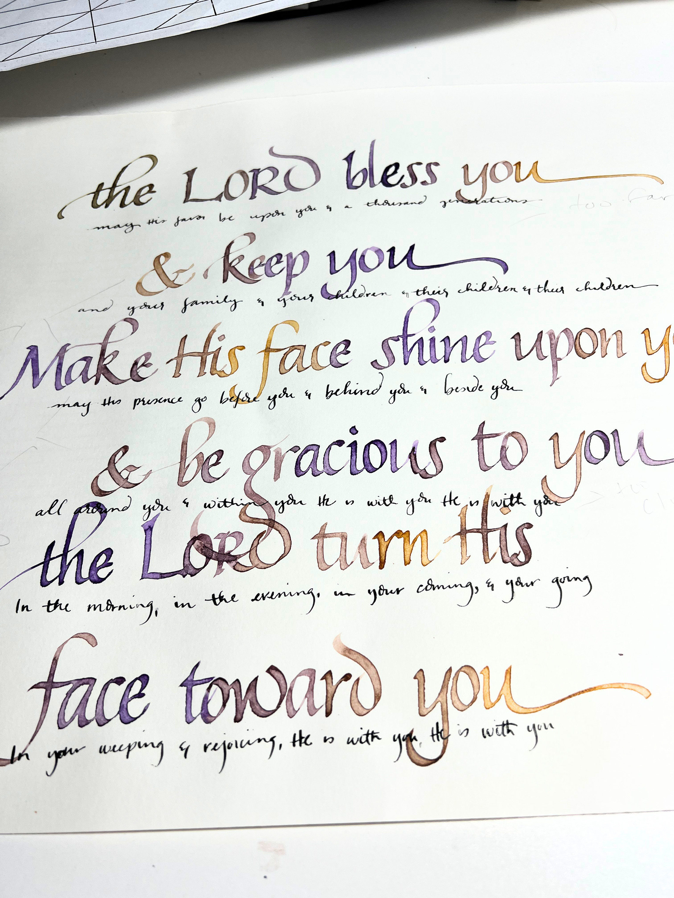
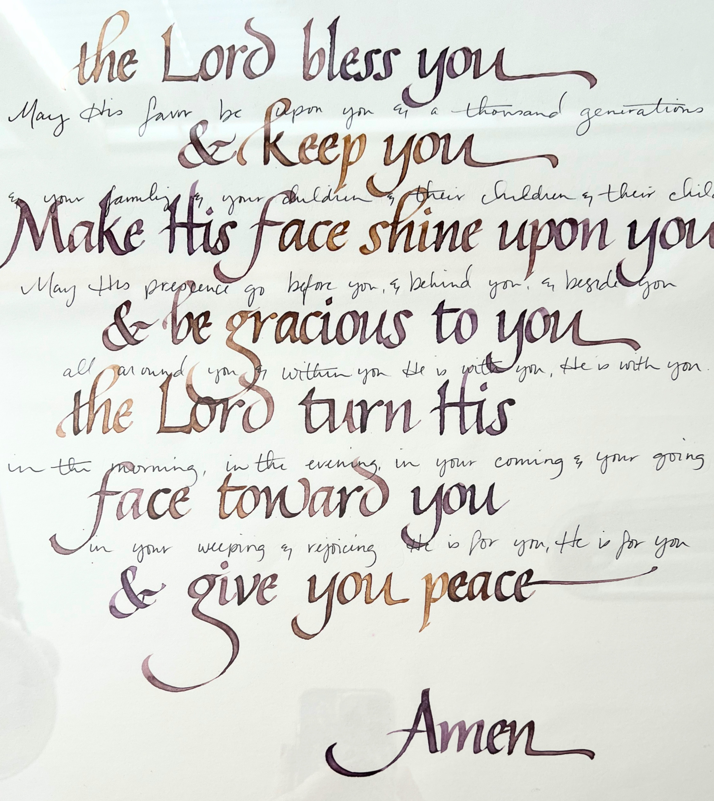

The Biggest Blessing
When God inspires the perfect gift
8/20/2026 by Melissa Hundley

I feel like I never know what to give for wedding gifts. Sure, there's always the registry...and I have done that many times...but have you ever had that moment where a registry gift just didn't seem right? Or maybe there wasn't a registry...then what?
My fall back is usually some sort of calligraphy. It's much easier when I know what the couple's special song is or their favorite verse...but sometimes I don't know that and feel super stumped about what to write. This was one of those cases...
Let’s back up just a bit. A good friend of mine was getting married (this was several years ago now)...and she had been through a lot in her life. I wanted to do something really special for her and her husband to be (also a wonderful man who had been through a lot in his life). I went back and forth on different verses, different song lyrics, and nothing seemed to be the right fit.
...and then it came to me...

One of the first songs I had ever heard my friend sing by herself was "The Blessing" and it was so beautiful. So I started playing around with different layouts, different ink colors...but I wasn't happy with anything...until inspiration struck again!
I had learned this technique of mixing ink colors where they kind of bleed in to each other using only two different colors. I had done something similar with different colors, but heard that I could get the same result with a couple of Windsor Newton colors - purple and yellow ochre...so I tried it and absolutely LOVED it!
I thought about just leaving the piece to just the verse lyrics (also straight from scripture)...but found myself really wanting to include lyrics from the bridge as well. So with a stroke of my pen, I decided to try writing them in my own handwriting as if I was signing something. Quick, and partially illegible (although better than my actual signature), and the result was more than I could have asked for!

I still didn't know if this would be something the couple would love...until a week before the wedding. I was at church and one of the gals that was serving on the worship team with me that week was also the bride's maid of honor. As we were talking about the wedding, she mentioned that she was going to sing "The Blessing" and her husband was going to play his guitar.
Needless to say, I got very excited!
I waited to make sure the bride was not in the room or within earshot of where we were talking and then mentioned to the maid of honor that I did a calligraphy piece using lyrics from that song as a wedding gift. I was so relieved...I mean having a song sung at your wedding is a sign that the song is special to you...right?
The wedding came and went and was absolutely lovely...a small backyard wedding with friends, good food, and dancing! It was a couple of weeks before I saw the bride and groom again, and they came up to me to express how much they loved their gift!
I was so blessed that it meant so much to them! Even to this day, every once in awhile they still mention how much the love it and it always has a prominent place in their house. This is honestly why I love doing what I do! To know that a gift will bless people over and over again is such a gift to me!
If you need a special gift for someone (for any reason), or you want to give yourself a meaningful gift, please reach out! I'd love to create something beautiful for you! Send me an email at calligraphy@mjhdesignstudio.com